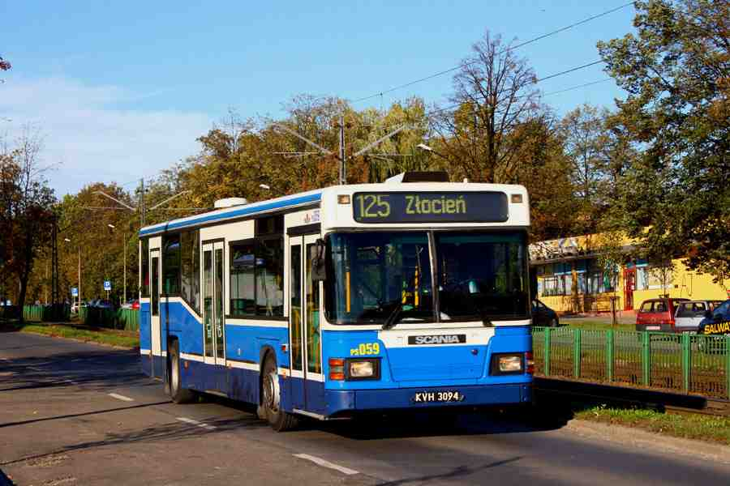
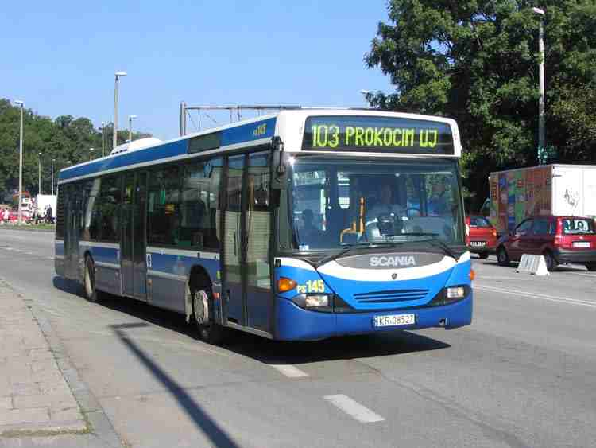
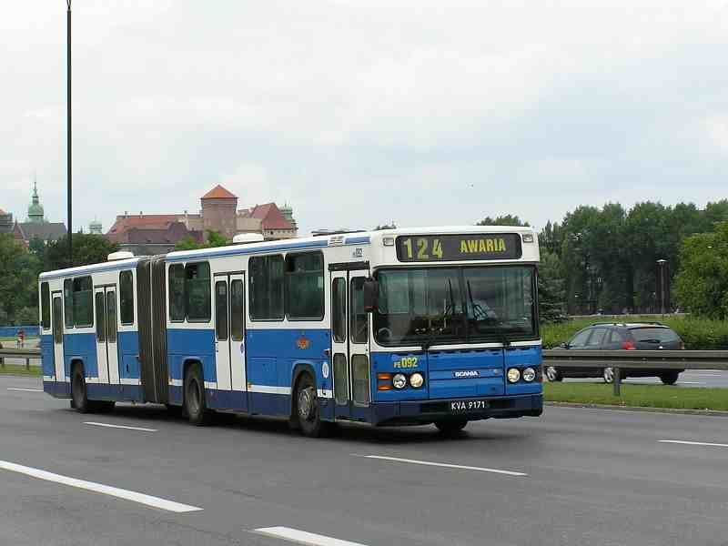

STRONA GLOWNA
AUTOBUSY
SCANIA
SCANIA CN113CLL

SCANIA CN113CLL #PS059
Lata eksploatacji w Krakowie: 1994-(nadal)
Dlugosc: 11,695m
Ilosc miejsc ogolem: 99
Ilosc miejsc siedzacych: 31+1
Obecna ilosc pojazdow w ruchu liniowym: 32
Poczatkowe numery taborowe: 49001-49069
Przenumerowanie 1.(rok 1999): 49xxx → PSxxx
Ilosc pojazdow na koniec roku: 1994:1, 1995:13, 1996:21, 1997:46, 1998:62, 1999-2011:69, 2012:55, 2013:39, 2014:32
SCANIA CN94UB

SCANIA CN94UB #PS145
Lata eksploatacji w Krakowie: 1999-(nadal)
Dlugosc: 11,986m
Ilosc miejsc ogolem: 110
Ilosc miejsc siedzacych: 30+1
Obecna ilosc pojazdow w ruchu liniowym: 10
Poczatkowe numery taborowe: 49063, PS142-PS144, BS145-BS154
Przenumerowanie 1.(rok 1999): 49063 → PS141
Przenumerowanie 2.(rok 2000): BSxxx → PSxxx
Ilosc pojazdow na koniec roku: 1999:4, 2000-2010:14, 2011:12, 2012:11, 2013-2014:10
SCANIA CN113ALB

SCANIA CN113ALB #PE092
Lata eksploatacji w Krakowie: 1992-(nadal)
Dlugosc: 17,925m
Ilosc miejsc ogolem: 150
Ilosc miejsc siedzacych: 45+1
Obecna ilosc pojazdow w ruchu liniowym: 3
Poczatkowe numery taborowe: 38001-38030
Przenumerowanie 1.(rok 1998): 38001-38030 → 48001-48030
Przenumerowanie 2.(rok 1999): 48001-48030 → PE071-PE100
Ilosc pojazdow na koniec roku: 1992:15, 1993-1995:20, 1996-2009:30, 2010:27, 2011:12, 2012:7, 2013-2014:3